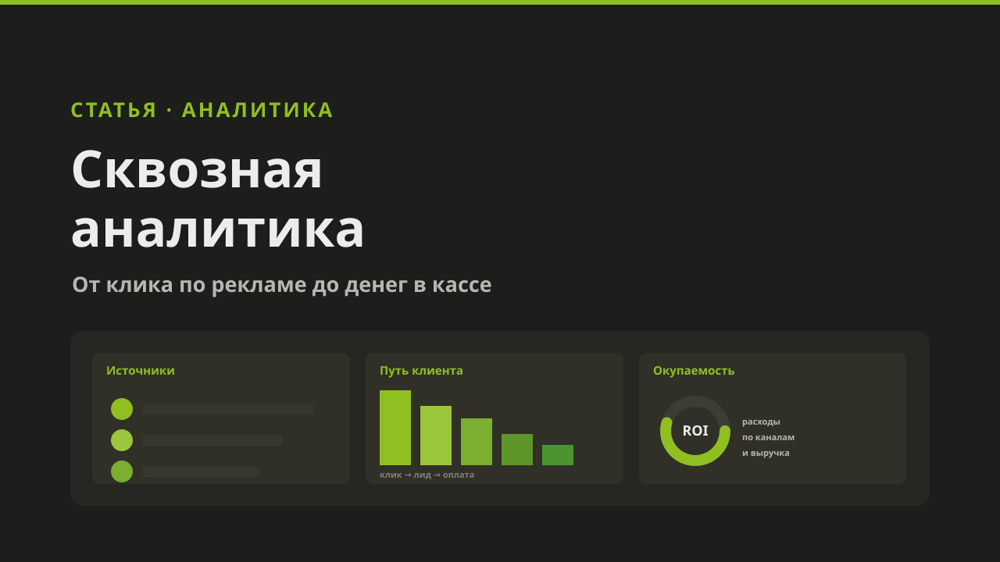
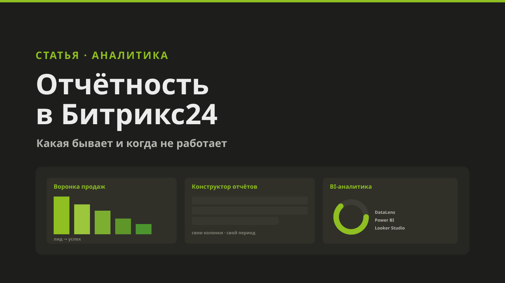
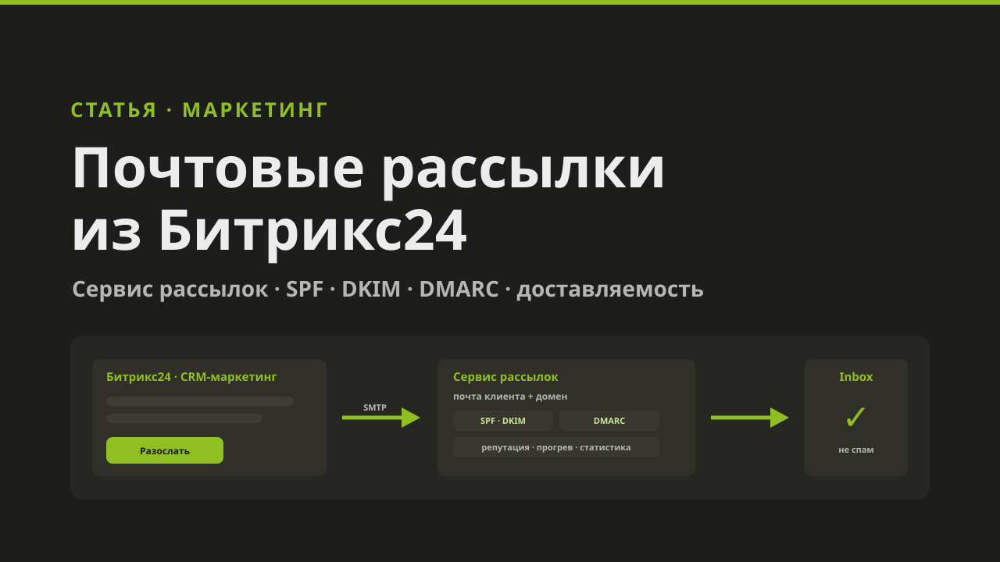
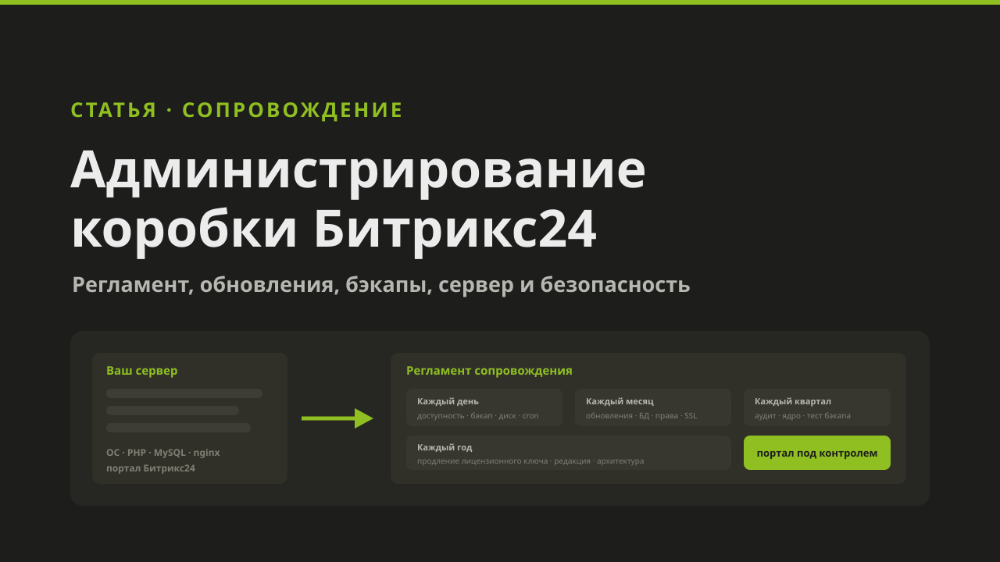
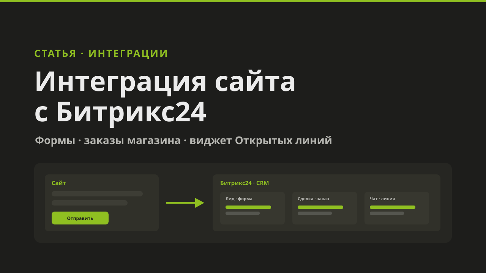
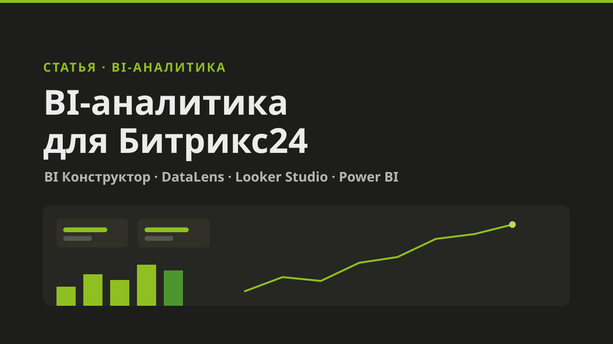
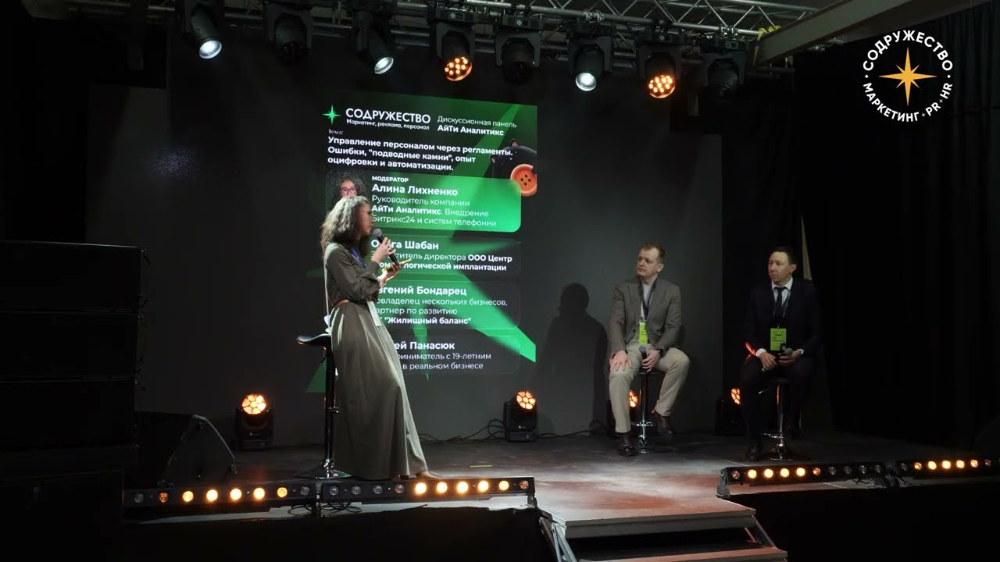
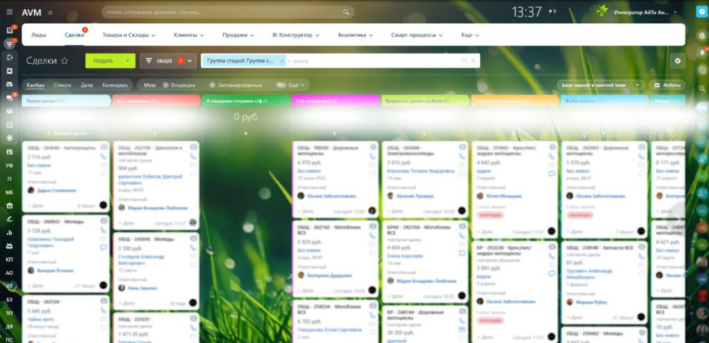

Внедряем Битрикс24 и системы IP-телефонии, которые реально работают
Мы идём от ваших задач и «болей», а не от типовых решений. 15 лет опыта, честный диалог и ответственность за результат — от аудита до сопровождения.
Почему наши клиенты остаются с нами надолго

Мы идём от ваших задач и «болей», а не от типовых решений.

Строим открытый диалог с клиентами на обоюдном доверии, уважении и искренности.

С нами ваш путь автоматизации быстрее и надёжнее.

Мы уверены в наших сотрудниках и несём ответственность за каждого из них.

Мы всегда на вашей стороне — вы можете рассчитывать на нашу поддержку.

Наш клиент всегда знает, что его ждут, любят и слышат. Мы всегда на связи!

15 лет опыта и любви к своему делу.
Новости
Все публикации →
Сквозная аналитика в Битрикс24: что это, кому нужна и когда её мало
Путь клиента от рекламного клика до оплаты, плюсы и минусы штатного инструмента и когда нужен отдельный сервис.

Отчётность в Битрикс24: какая бывает и когда она не работает
Оперативная аналитика, конструктор отчётов и коротко про BI-аналитику. И почему отчёты пустые, если компания не работает в CRM.

Почтовые рассылки из Битрикс24: email-маркетинг и транзакционные письма
Зачем подключать сервис рассылок, как настроить SPF, DKIM, DMARC и привязать почту к CRM-маркетингу.

Администрирование и поддержка коробочных порталов Битрикс24
Обновления, резервное копирование, cron и агенты, мониторинг сервера, безопасность и продление ключа.

Интеграция сайта с Битрикс24: формы, заказы и Открытые линии
Как передать в CRM заявки с форм и заказы из интернет-магазина, как поставить виджет Открытых линий.

BI-аналитика для Битрикс24: DataLens, Looker Studio и Power BI
Что Битрикс24 умеет в аналитике сам, что даёт подключение внешних BI-систем и какие грабли встречаются чаще всего.

Управление персоналом через регламенты
Алина Лихненко провела панель с нашими клиентами на выставке «Содружество». Видео и тезисы.

Наш кейс с «ТехноАгро» вышел на официальном сайте Битрикс24
Конверсия из лида в продажу выросла с 9% до 30%, реклама подешевела втрое.
Битрикс24 Кейс-Бар
Роман Лабаков и три клиента «АйТи Аналитикс» — о внедрении Битрикс24 на кейс-баре «Содружества». Видео и темы.
Наши услуги
Все услуги →Бизнес-анализ и консалтинг
Разбираем процессы компании и проектируем, как они должны работать в Битрикс24.
Аудит работы в Битрикс24
Проверяем текущий портал и находим, что мешает продажам и где теряются данные.
Внедрение и настройка Битрикс24
Разворачиваем CRM с нуля и настраиваем её под процессы вашего бизнеса.
Доработка и автоматизация
Расширяем функциональность портала и настраиваем бизнес-процессы под задачи компании.
Интеграция Битрикс24 и 1С
Синхронизируем товары, счета, оплаты и остатки между Битрикс24 и 1С.
Интеграция Битрикс24 с сайтами
Подключаем формы, заявки и заказы интернет-магазина напрямую в CRM.
Интеграция Битрикс24 с телефонией
Звонки фиксируются в карточке клиента, а записи разговоров — в сделке.
Настройка отчётности в Битрикс24
Собираем отчёты по продажам, менеджерам и воронкам под задачи руководителя.
Настройка сквозной аналитики
Показываем путь клиента от рекламного объявления до денег в кассе.
Внедрение BI-аналитики
Строим наглядные дашборды в DataLens, Power BI и BI Конструкторе.
Настройка e-mail рассылок из Битрикс24
Настраиваем триггерные и массовые письма клиентам прямо из CRM-маркетинга.
Интеграция соцсетей с Битрикс24
Сообщения из соцсетей попадают в Открытые линии и превращаются в лиды.
Интеграция с Telegram, Viber, WhatsApp
Переписка в мессенджерах ведётся из Битрикс24 — без потери истории и клиентов.
Переход в Битрикс24 с другой CRM
Переносим сделки, контакты и историю из amoCRM, «Мегаплана» и других систем.
Администрирование и поддержка коробочных порталов Битрикс24
Обновления, резервное копирование, безопасность и стабильность вашего сервера.
Внедрение IP-телефонии
Переводим компанию на цифровую связь — дешевле и удобнее городских линий.
Настройка виртуальной АТС
Настраиваем АТС под структуру отдела продаж и распределение звонков.
Подключение SIP-номеров и шлюзов
Подключаем номера и оборудование для бесперебойной связи.
Интеграция телефонии с CRM
Звонки автоматически фиксируются в карточке клиента в Битрикс24, amoCRM, 1С.
Коллтрекинг и аналитика звонков
Показываем, какая реклама приносит звонки и продажи.
Поддержка и администрирование
Обслуживаем телефонию и оперативно решаем технические вопросы.
Внедрение ИИ-ассистентов
Подключаем ИИ-ассистентов в Битрикс24 и другие системы.
Автоматизация обращений и документов
Ускоряем обработку заявок и документооборота с помощью ИИ.
Разработка чат-ботов с ИИ
Создаём умных чат-ботов для сайта и мессенджеров.
Обучение сотрудников работе с ИИ
Учим команду эффективно использовать ИИ-инструменты в работе.
Консультации и подбор решений
Помогаем понять, какие ИИ-инструменты нужны именно вашему бизнесу.
Сопровождение и доработка решений
Дорабатываем и поддерживаем внедрённые ИИ-решения.
Кейсы
Все кейсы →
Битрикс24 для интернет-магазина keramin.by
Объединили каналы в CRM, выстроили воронку интернет-магазина, интегрировали 1С и сквозную аналитику. Итог — рост продаж.

Контроль обучения персонала в стоматологии
Учёт обучения, инструктажей и медосмотров сотрудников в Битрикс24. Система сама следит за сроками и напоминает заранее.
Битрикс24 для «ТехноАгро»: продажи ×3, реклама дешевле втрое
Воронки по типам обращений, SIP-телефония, UTM по 50+ каналам и связка с 1С. Конверсия из лида в продажу выросла с 9% до 30%.
Отзывы
Все отзывы →Частые вопросы о Битрикс24 и телефонии
Сколько стоит внедрение Битрикс24?
Стоимость зависит от масштаба задач, количества пользователей и нужных интеграций. После бесплатной консультации и аудита процессов мы предложим точную смету под ваш бизнес.
Сколько времени занимает внедрение Битрикс24?
Базовая настройка занимает от нескольких дней. Комплексное внедрение с доработками и интеграциями обычно занимает от 2 до 8 недель в зависимости от сложности процессов.
Работаете ли вы с компаниями, у которых уже есть Битрикс24?
Да. Мы проводим аудит существующей системы, дорабатываем функционал, переносим данные из другой CRM и берём аккаунт на постоянное сопровождение.
Что такое IP-телефония и зачем она нужна бизнесу?
IP-телефония передаёт звонки через интернет вместо обычных телефонных линий. Это дешевле городской связи, позволяет записывать разговоры, строить отчёты по звонкам и напрямую интегрировать телефонию с CRM.
Можно ли объединить телефонию и Битрикс24 в одну систему?
Да, это одно из ключевых направлений нашей работы. Звонки автоматически фиксируются в карточке клиента, менеджер видит историю обращений и может звонить прямо из CRM.
В каких городах вы работаете?
Наш офис находится в Минске, но мы работаем с компаниями по всей Беларуси — внедрение и поддержка возможны удалённо.
Готовы обсудить ваш проект?
Оставьте заявку — перезвоним в течение рабочего дня и предложим решение под вашу задачу.